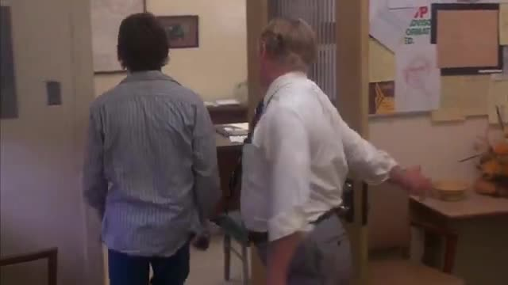

“Believing, with Max Weber, that man is an animal suspended in webs of significance he himself has spun, I take culture to be those webs, and the analysis of it to be therefore not an experimental science in search of law but an interpretive one in search of meaning.”
One shot, one gesture that is easy to miss, two possible cuts. This page follows a single encounter between Bolas and 6.5 seconds of WarGames (1983). Each section below uses the same footage. The rest of the archive works the same way, many times over.
The lab asked the archive for “hallway with two identical closed doors, figure hesitating between them”. That is the search for sign 11, Index of equivocity, whose question is “What two worlds could explain the same action?”. One of the shots it returned is wg_050: a school principal walks David out of his office. Bolas catches the shot, starts to pull it into a sequence, stops, and moves the cut. Around the change, Bolas slows the film to one fifth of its speed.
What Bolas did tells you how it selects. It attached the thread where a hand meets a door, proposed a cut when the person being shown out was gone, and then waited for the hand.
A cut at 3.45 s keeps a man holding a door until the boy is through. The action ends when its object leaves, and a viewer can name it at a glance. A cut at 3.80 s keeps another 0.35 s, eleven frames, in which the hand stays on the door with no one left to hold it for, and then lets go. That interval is the unit Bolas kept. Recognizing the door and hand was enough for the first cut. The second cut depends on how long the hand stays.
Now set your own in and out. Bolas's marks stay on the timeline for comparison.
The same gesture, three lengths. Play each and say whether you can see a hesitation. A hesitation is a duration, measured against something else in the shot. A single frame has no duration.
The fragment Bolas kept, 1.70–3.80 s, placed between two different pairs of neighbours from the same film. The fragment is identical in both. Each sequence suggests a reading. Each reading is marked with a wink: a mark that someone made this reading, attached at the point in the footage where it takes hold. Open each to see what supports it and what it leaves unsettled. Neither reading is certified.
The lab's catalogue already holds a reading of this shot, made by a machine reader at its read frame, 1.5 s. Here it is next to the frame it is attached to.

“Through the office glass, the secretary sets down the slip of paper while David watches: the action lets us infer the unseen password.”
What the footage shows at 1.5 s: both men seen from behind, walking toward the office door; the principal's arm reaches out toward it. There is no secretary and no slip of paper at this frame, or anywhere in the 6.5 s. The catalogue also files the shot under “David's Bedroom · IMSAI 8080, Acoustic Coupler & Hacking School Grades”; the shot is in the principal's office.
The reading may describe nearby footage in the film. This clip does not show it. The reading stays on the record as one someone made, attached at 1.5 s, and open to contest.
The same encounter, now with you in it. You hold a document. Someone holds out a hand for it. You can keep folding it, hand it over, or put it away. After a while their hand goes down. They respond to what you do. There is no score.
Press begin.
After Donahue (2023), “All the Microworld's a Stage: Realism in Interactive Fiction and Artificial Intelligence”, pp. 243–249: a represented fragment draws on a world it cannot contain. The figure on the right feels nothing. The scene stages behaviour from which a relationship might be attributed, and what you attribute also shows what you expected and what the author built in.
Everything on this page, as one web around one shot. Each node goes back to its section. Nodes you changed carry your choices.
Find the smallest concrete behavior in which the larger situation becomes perceptible. Specify exactly how it unfolds, who notices it, and what surrounding action makes it matter. Let the audience infer the character or system from this encounter. Preserve enough duration for the detail to register; do not explain its meaning afterward.
Sources. Clifford Geertz, The Interpretation of Cultures (1973), p. 5. Donahue (2023), “All the Microworld's a Stage: Realism in Interactive Fiction and Artificial Intelligence”, pp. 243–249. Christoph Waltz, interview at popentertainmentarchives.com, where he uses pars pro toto about Django Unchained and historical representation (“In telling a story, you cannot tell it by finding the appropriate average”). Jamie Foxx's account of Tarantino's “all I need is one” and of Waltz's attention to folding and pocketing a paper. WarGames (1983, dir. John Badham), clips wg_050, wg_048, wg_052, wg_011 and wg_262 from the lab's archive, 640×360 at 30 frames per second.
Times on this page were found by stepping through wg_050 at 0.1 s and then frame by frame (1/30 s) around the door. 1.70 s: the hand meets the edge of the door. 3.45 s: the first frame without David, who passes out of view at the door. 3.80 s: the last frame in which the principal's hand is seen on the door. 3.97 s: the door is shut. Neighbouring clips are described from their frames, not from the catalogue; several catalogue notes for them describe other moments.